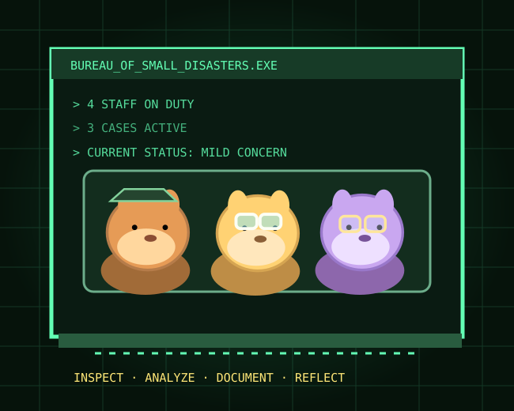
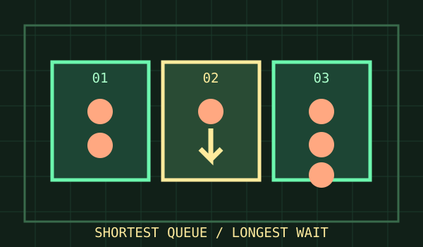

TECHNOLOGY / SUSPECTED SENTIENCE
THE PRINTER CONSPIRACY
It works beautifully—until you urgently need to print exactly one page.
EXAMINE EVIDENCE ↗> EXECUTE /BUREAU/WELCOME.EXE
The world's most unnecessarily elaborate institution for investigating everything that goes slightly wrong. Fictional case files, wonderfully bad ideas, and four genuinely useful techniques.
[ NON-COMMERCIAL / NO ACCOUNT / NO FORMS / NO CONTENT UPLOADS ]

> LS /BUREAU/CASES/
Three classified inconveniences. Four departments per case. No incident is too small for excessive documentation.
It works beautifully—until you urgently need to print exactly one page.
EXAMINE EVIDENCE ↗
Two socks entered the machine. Only one came home. An inquiry has begun.
FOLLOW THE THREAD ↗
Choose the shortest line. Watch it become the longest moment of your life.
INVESTIGATE THE WAIT ↗[ ALL STATISTICS AND CHARACTERS IN THE BUREAU CASE FILES ARE FICTIONAL. ]
> CAT /BUREAU/FIELD-MANUAL/README
The original Problem.me technique articles survive the pivot—full explanations, examples, evidence checks, and practical warnings. No workspaces, text boxes or saved investigations in this preview.
Follow a credible chain instead of stopping at the first convenient explanation.
Map multiple plausible causes. Separate hypotheses from evidence.
Find where recurring impact concentrates—without confusing ranking with proof.
Separate decision criteria from the evidence needed to diagnose a deviation.
> TREE /BUREAU/DEPARTMENTS
Each small disaster comes with a museum exhibit, a terrible proposal, a map of related chaos and an actual thought worth keeping.
Small failures preserved for public amusement and mild recognition.
DEPARTMENT / 02Solutions so ambitious they become exciting new problems.
DEPARTMENT / 03An ever-expanding map of familiar frustrations.
DEPARTMENT / 04The moment when the joke turns into a useful observation.
> TAIL -F /DAILY/ANOMALIES.LOG
A fictional forecast of everyday inconvenience. Changes with the calendar, never with personal details, and saves absolutely nothing.
One important email will begin with “just circling back.” Visibility improves after tea.
> CAT /BUREAU/PERSONNEL.JSON
Four capybaras. Dubious qualifications. An endless supply of departmental stamps.
Investigates minor inconveniences with dramatic seriousness. Still looking for the left sock.
Every problem needs a solution with twice as many moving parts.
Quietly notices the one useful truth everybody else missed.
Predicts a 99% chance of minor chaos. Never carries an umbrella.